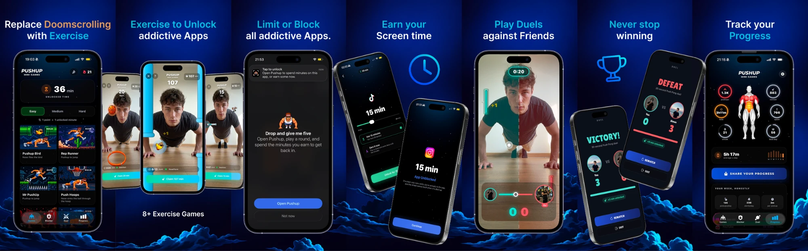

Pushup Mini Games: all in on a new category
Computer vision fitness games, live 1v1 pushup duels, and an automated content engine built to copy the distribution playbook of a proven hit.
The ideaTurn pushups into real games
Pushup Mini Games is an iPhone app where your body is the controller. You put the phone on the floor, do pushups and planks, and the front camera tracks you with computer vision. Every rep moves the game: you flap a bird, sink hoops and shoot targets with your own movement, and you can even steer with your nose. No wearables, no extra hardware, and the video never leaves the phone.
Instead of a boring rep counter, every workout is a mini game, so people actually want to come back and do one more set.
The goal is to replace social media with exercise that feels just as fun. You block the apps you waste time on, and every minute you collect by playing the games can be spent to unlock those apps again, or on skins and themes for the games. Scrolling has to be earned, and earning it is the fun part.
Computer vision tracking
On-device pose and face tracking counts full reps, detects real planks, and reads head and mouth movement as controls.
Games, not counters
Pushup Bird, Push Hoops, Push Shot and more. Progress, streaks and a journey keep users coming back.
Earn your scroll time
Block distracting apps, collect minutes by playing, then unlock apps or buy game skins and themes with them.
Private by design
All tracking runs on the iPhone. Video is never recorded or uploaded.
MarketNo competition in pushup games
Fitness apps are crowded, but games you play with your body through computer vision are an empty space. There is no real competitor making pushup mini games. The category is open, so the first app to own it, and to own the attention around it, wins it.
DuelsLive 1v1 Push Pong against friends
Duels let you challenge a friend and play live, head to head, with both players doing real pushups on their own phones at the same time. Nothing like this exists. It is built-in virality: every duel needs a second person, so every player has a reason to invite someone else, and every duel is a clip worth sharing.
There is one creator who does 1v1 battles with classic pushups, and I am also building automation for his style of content. But nothing is like my Push Pong: a real game you play with an actual workout, not just a rep race.
DistributionCopying what already works: Pushscroll
Pushscroll, an app where you earn screen time with exercise, is a successful app with 100k+ in monthly recurring revenue, and it grew through short-form video. I am not guessing at a growth channel. I am taking a proven one and pointing it at a category with no competitors, with a product that is far more watchable: real games and live duels, not only rep counting.
Pushscroll's weakness is retention. Everyone gets bored of counting reps. Pushup Mini Games is actually fun: you are so focused on the game that you do not realise you just did 20 to 50 pushups in one session. People come back because they want to play, not because they feel they should.
Building my first app also gave me a ton of marketing knowledge and really good contacts who can help me scale. I can probably automate Reddit through those contacts too. With the investment in virtual devices, finished tools and, most of all, recording all the videos, I can automate distribution on almost every social platform. On top of that I will try UGC, which was recommended to me together with a full strategy by someone who gained over 150 million views in 2025 at minimal cost.
My first app already made over $21k in revenue, but it is hard to promote on short-form social media. It has no wow effect, so realistically only Reddit-style channels work for it. This product is the opposite: you can see it working in three seconds, which is exactly what short-form rewards. That is why I want to go all in on it. The distribution is proven, the niche is empty, and I have already shown I can ship and earn.
Content engineInfinite content, automated, at zero cost
The bottleneck for apps like Pushscroll is content volume. I am solving that with my own tools:
- Tools that can generate an unlimited amount of content in the style of Pushscroll and similar viral apps, automatically.
- Zero-cost AI tooling that swaps characters in videos, so one proven clip becomes many, each with a different person.
- A network of many accounts, each with different people and different content, so a winning format is multiplied across the feed instead of depending on one creator.
In case you have not noticed, the character in the video is Gru from Minions. I can generate any character ever, which gives me a real content weapon: one proven clip can be remade with any character, in any style, at no extra cost.
I was also accepted into the Claude startup program, which gives me practically unlimited AI tokens. That means I can automate almost everything: content generation, captions, scheduling, and the day-to-day running of the account network. I am planning to build automation for posting and warming up accounts on all major social platforms, running on virtual devices.
Because generation costs nothing, the only real limits are accounts and devices. That is where the investment goes.
StatusWhere the project is right now
- The app is built and currently going through Apple's App Store review.
- Marketing automation is in progress: I am preparing thousands of video variations so launch day starts with a deep library of content.
- Social media automation is being built: posting and account warm-up across all major platforms on virtual devices.
Use of fundsWhat the investment buys
Virtual devices
A bunch of virtual devices to run the account network in parallel. From my previous app I know someone who is finishing full automation for Instagram and TikTok on virtual devices, with country targeting. I would like to rent those from him or make my own automation with rented virtual devices so I can make it better for my needs.
Real UGC creators
Real creators hired through SideShift to make the content that cannot be automated: authentic reactions, real duels, real people. I have a written plan for how to do it, based on what other successful founders did, and I already have the exact videos in mind that I want the creators to make.
Meta ads
Paid Meta ads to put the best-performing videos in front of more people, scaling the formats that already work organically.
Testing at volume
More formats tested every week means faster discovery of the videos that convert, then doubling down on them.
The mix is deliberate: automation for volume, real creators for authenticity, Meta ads for scale, and the data from both decides where the budget goes next.
ContactGet in touch
